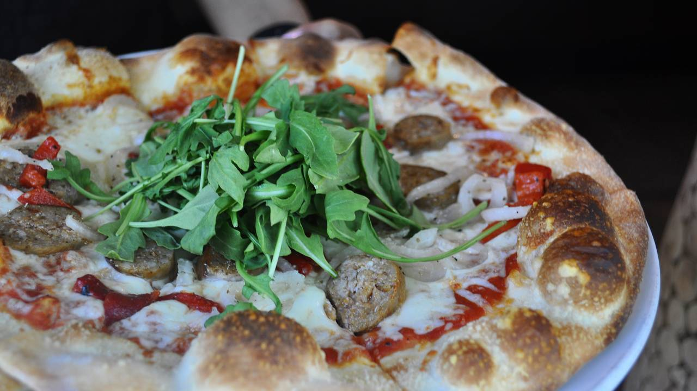

You've come to the right place to find a great restaurant near you!
La Piazza Ristorante



Italian restaurant. Offers fresh Wood Oven Pizza and chef approved Entrées and Appetizers with your favorite Wines. Delicious and healthy meals for the whole family to enjoy.